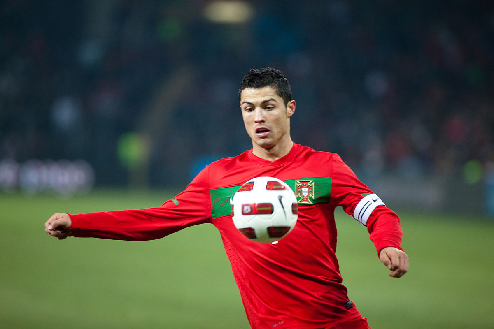

Cristiano Ronaldo

| inicio | biografia | logros | |
Cristiano Ronaldo |
|||
| Cristiano Ronaldo dos Santos Aveiro, conocido como Cristiano Ronaldo es un futbolista portugués que juega como delantero o extremo izquierdo 5 de febrero de 1985 (edad 37 años), Cristiano juega en Qatar 2022 su quinto Mundial, competencia en la que ya suma nueve goles en 21 partidos disputados. Cristiano Ronaldo tiene un récord mundial de 118 goles en 194 partidos internacionales desde que debutó con Portugal en 2003. | |||
|  | |
||
| Derechos reservados 2022 | |||